School of Psychology & Neuroscience, University of Glasgow
The day I saw Pulp Fiction (1994) in a movie theatre…
…with my mother 😱
Kampis & Southgate (2020)
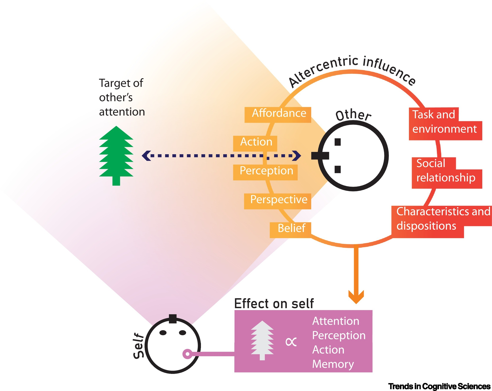
The Scope of Altercentric Influence. Orange and purple fields indicate the perceptual range of self and other. Orange boxes indicate some of the different ways in which the other can interact with, relate to, or process, the target of their attention (indicated by the green tree). Each of these can, in turn, exert an influence on our own information processing (effects on the self, listed in the purple box), but this does not imply that the observer must represent the other as experiencing a particular state to be influenced by that state. For example, an infant may be influenced by the others’ belief, but the infant may represent the others’ relationship with the object in a non-mentalistic way. The “∝” (proportional to) symbol indicates that the representation formed by the self (gray tree) will change in relation to the processes indicated on its right side, which, in turn, are modulated by the altercentric influence. Red boxes depict factors that may modulate the extent of altercentric influence, including how we perceive the others’ task or their relationship to us.
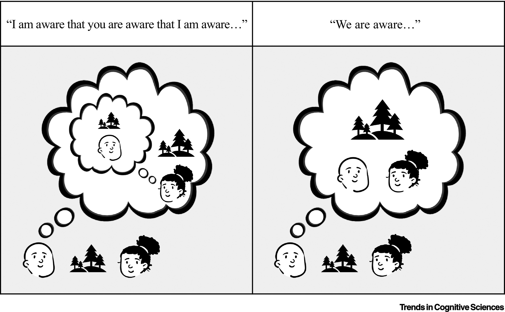
Shteynberg et al. (2023)
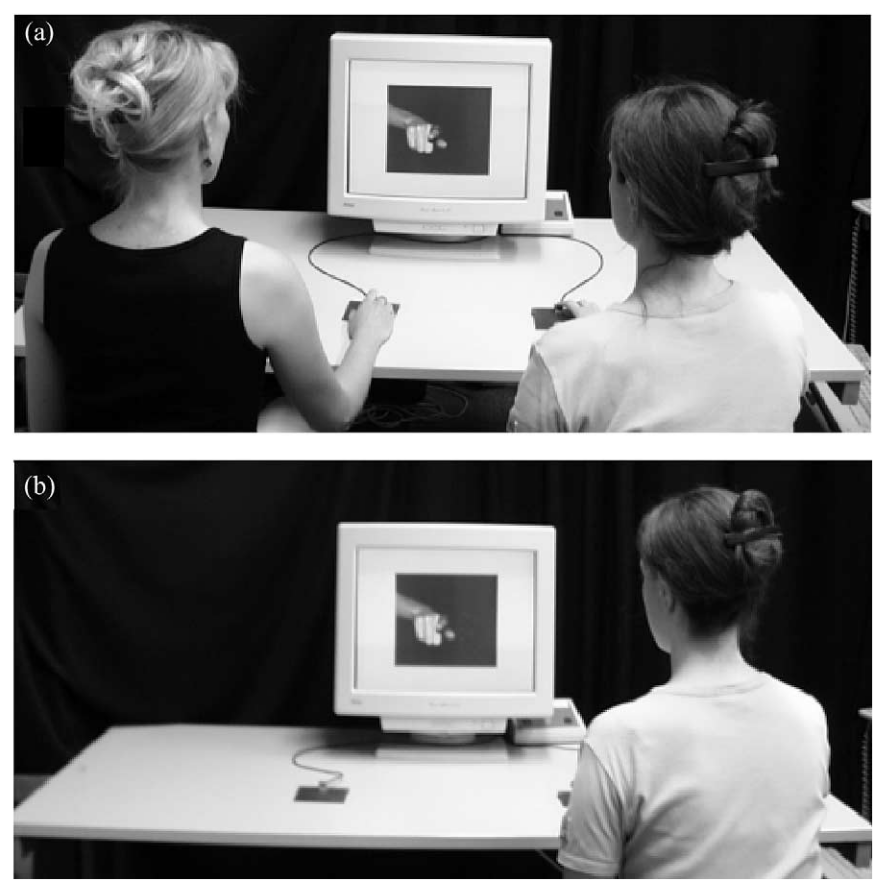
Participants completed a variant of the Simon task (Craft & Simon, 1970; Simon, 1990). On each trial they saw a hand in the centre of the screen and responded to the color of a ring on the hand (e.g., red or green)
Sebanz et al. (2003)
| red ring | green ring |
| left button | right button |
| compatible | neutral | incompatible |
|---|---|---|
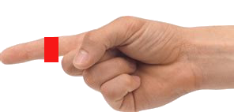 |
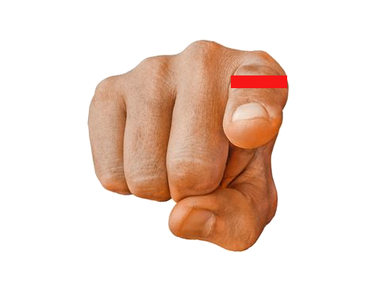 |
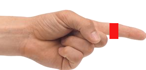 |
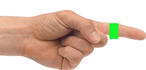 |
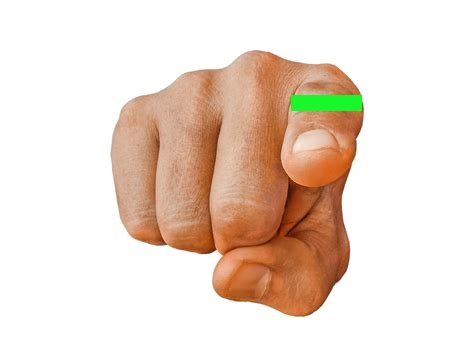 |
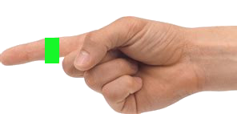 |
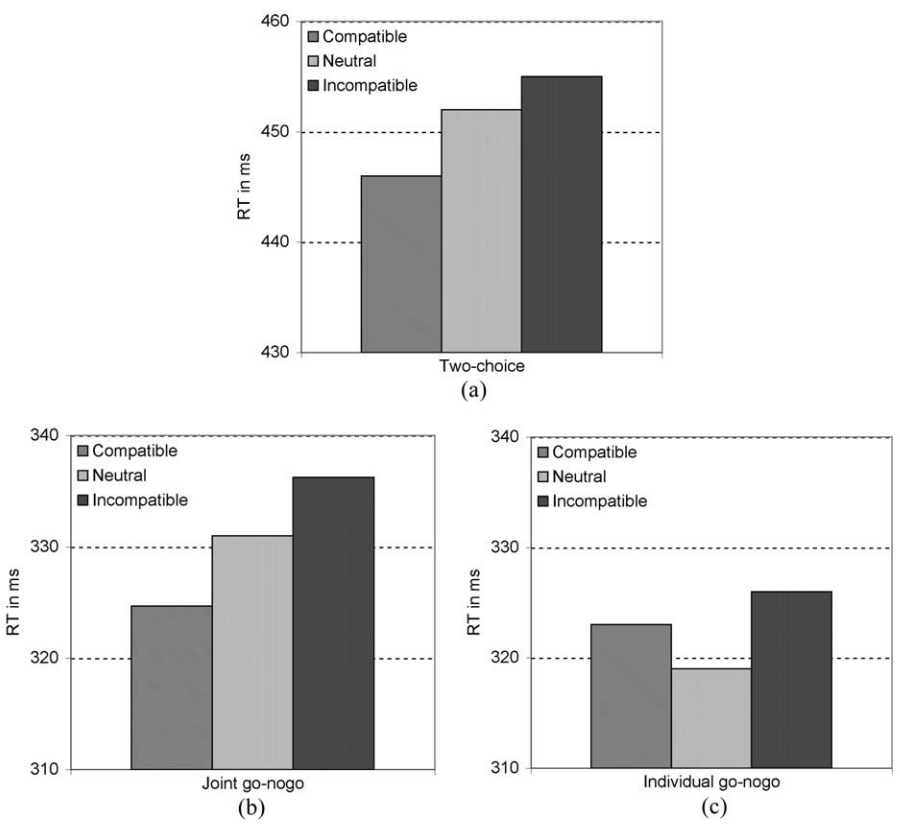
| red ring | green ring |
| left button | right button |
| compatible | neutral | incompatible |
|---|---|---|
Rueschemeyer et al. (2015)
example passage
| plausible (control) | The fishmonger prepared the fish. The fish had GILLS |
| implausible context | The boy woke up at dawn. The boy had GILLS |
| context | In the boy’s dream, he could breathe underwater. The boy had GILLS |
Participants heard the context sentence privately through headphones, and was explicitly asked to take the perspective of another participant (confederate) who could not hear the context sentence.
There were 42 different passages in each of the 3 conditions. Each participant heard one version of each.
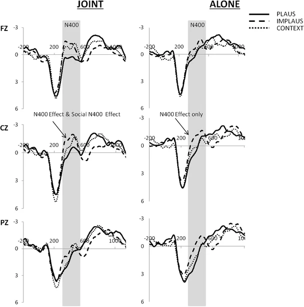
\(N=42\) participants
3 × 2 ANOVA with the within subject factor Condition (PLAUS, IMPLAUS, CONTEXT) and the between subjects factor Group (Joint, Alone)
However, participants were explicitly instructed to take the confederate’s perspective
Also… stimuli treated as fixed effects 😐
Jouravlev et al. (2019) attempted to elict the social N400 under four conditions:
social N400 obtained under (1) and (2) but not under (3) and (4)
concern: target word always in a predictable place (end of the sentence), could this elicit strategic processing?
and again… stimuli treated as fixed effects 😐
Are there limits to taking another’s perspective into account, and if so, what are they?
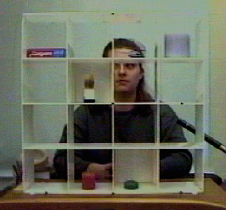
“Pick up the small candle and…”
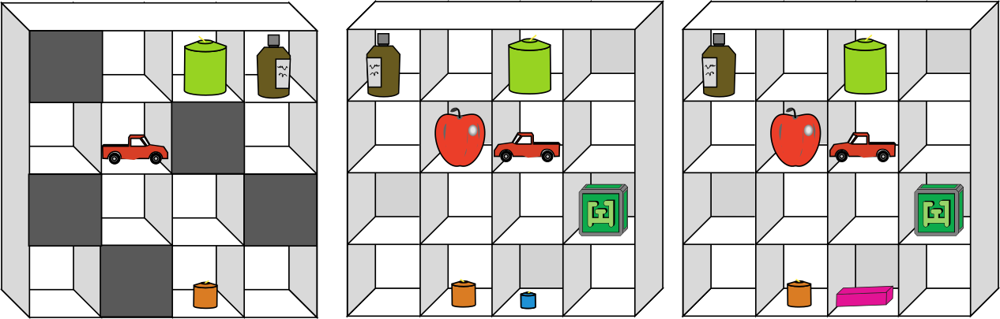
When a ‘competitor’ was present, people made errors ~20% of the time, experienced severe delays identifying the intended referent
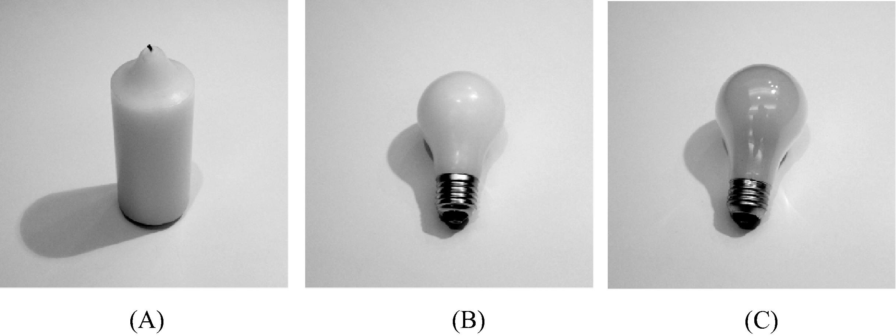
Mozuraitis et al. (2015); A regular candle (Panel A), candle that looks like a lightbulb (Panel B), and regular lightbulb (Panel C)
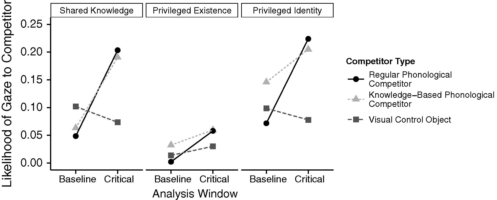
Mozuraitis et al. (2015)
Wolf et al. (2016): Do joint attention and shared goals modulate social closeness?
| joint attention | disjoint attention |
|---|---|
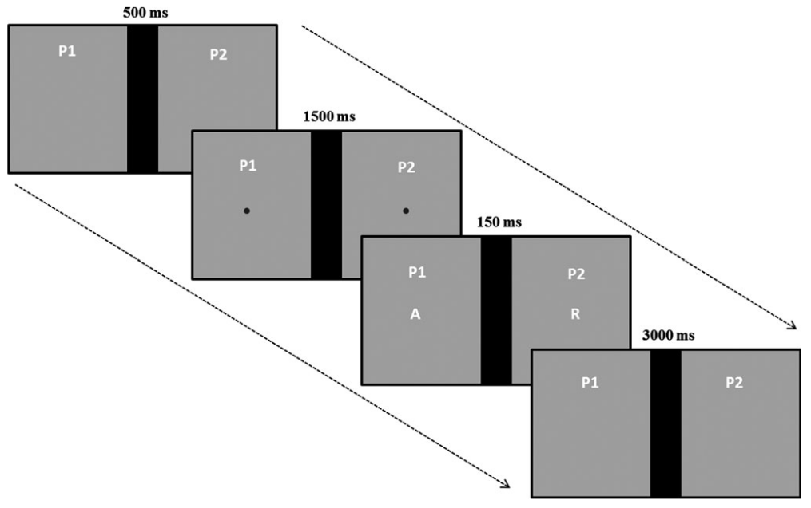 |
press yellow button for a consonant (K, R) and blue button for a vowel (A, O)
different partners for each attention condition (within-participant)
64 participants (20 male; 32 same-sex dyads)
Mean bonding score for joint condition (\(M=49.5\), \(SD=12.4\)) about 3.3 points higher than for the disjoint condition (\(M=46.2\), \(SD=11\)).
No main effect of shared vs. individual goal; no evidence for any interaction.
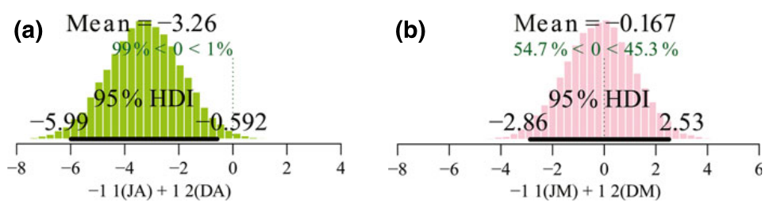
Posterior distribution of the joint attention contrast (a; Disjoint attention–Joint attention) and the shared goals contrast (b; Individual motivation–Shared motivation) on the bonding composite scale.
He et al. (2011): Are people more likely to form a collective mind with perceived ingroup members than with perceived outgroup members?
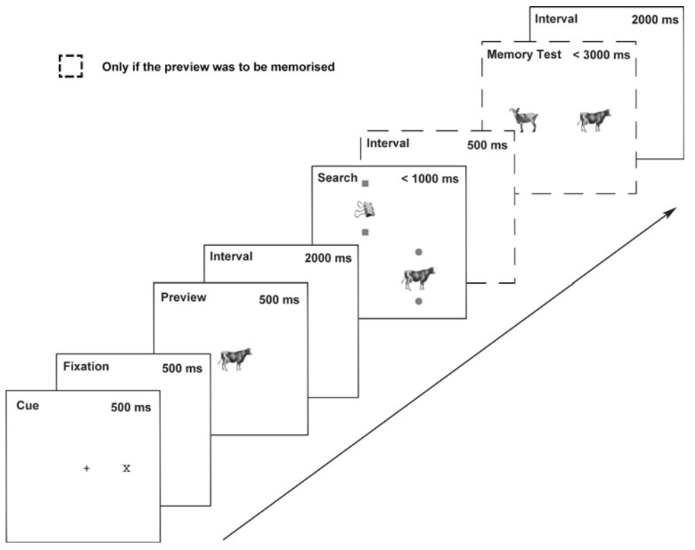
Visual search task performed in dyads
3 categories of images for the memory task: fruit, animals, musical instruments
Each dyad member got assigned a different category. Key question is what happens when the image is from your partner’s category.
Task: speeded response to presence of circles
cues could be valid or invalid
| British/White friends (ingroup) | British/White strangers (outgroup) | Chinese migrants to UK (ingroup) |
|---|---|---|
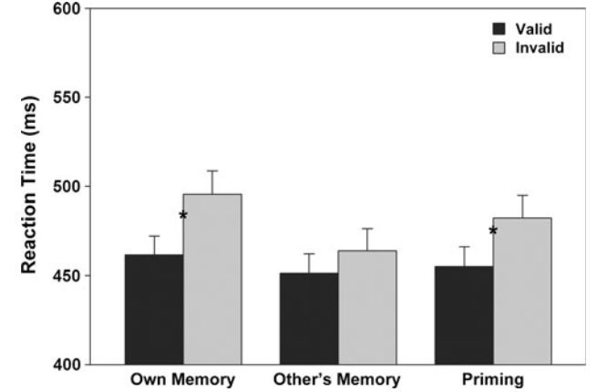 |
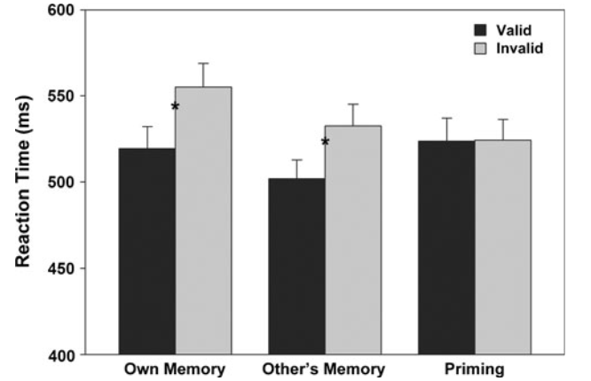 |
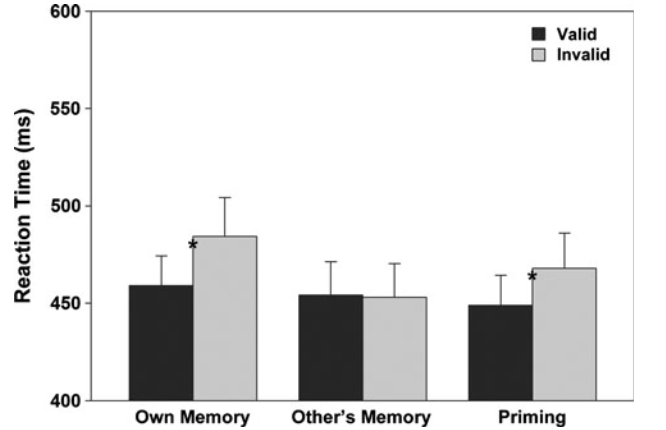 |
For RT in the Other’s memory condition, effect of Validity only appeared for the outgroup condition. This runs counter to the idea that you are more likely to form a collective representation with ingroup members!
He et al. suggest an explanation in terms of self-presentation + cognitive control
Wolf & Tomasello (2020)
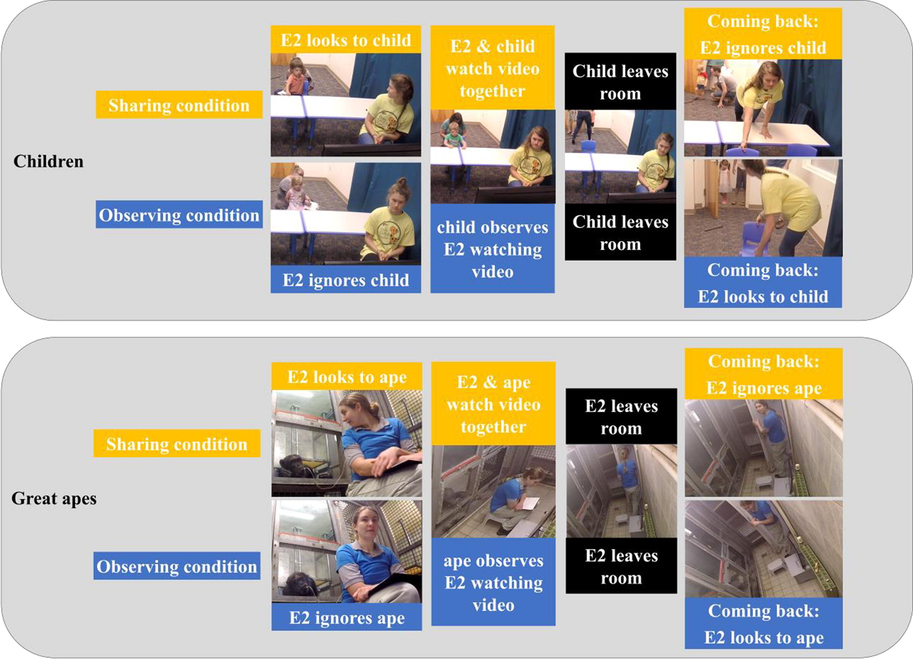
64 children 2.5-3yo
19 great apes (tested within participants), 14 chimps and 5 bonobos
DV: rate of approach to experimenter after returning to room
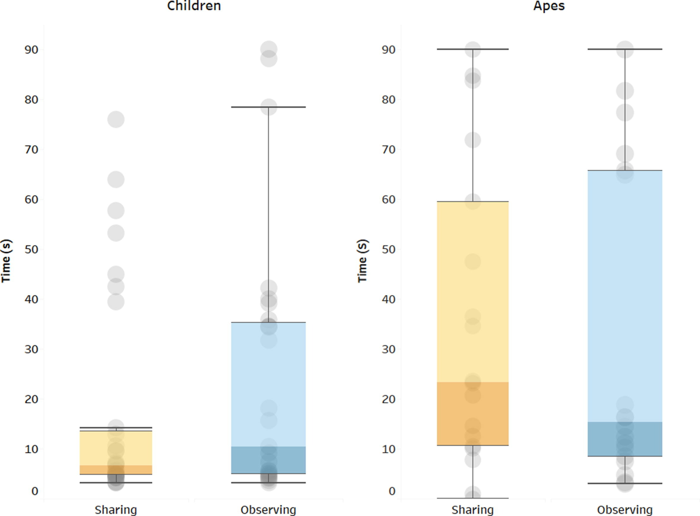
Review by Kikusui et al. (2006)
The presence of a conspecific diminishes stress responses to aversive stimuli.
Demonstrated in rats, guinea pigs, non-human primates, humans, even zebra fish
Is the mere presence of a conspecific sufficient? Does it depend on whether the conspecific is part of the perceiver’s ingroup? Qi et al. (2020)
Qi et al. (2020)
Participants heard aversive and neutral sounds (human screams 😱 vs. natural sounds 🐦) presented in 3 blocks of 18 trials (9 aversive, 9 neutral)
Participants were in one of three conditions (between participants).
| experience alone | \(N=31\) |
| with ingroup stranger | \(N=35\) |
| with outgroup stranger | \(N=31\) |
Dependent variables were skin conductance response (SCR) and subjective rating of affect
Hypothesis: SCR reduced in social conditions
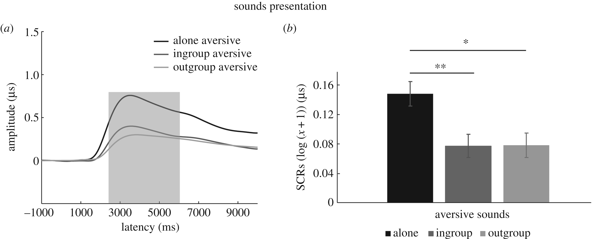
Qi et al. (2020); (a) Grand-averaged SCRs to aversive sounds. The shaded area depicts the time window that was used for the statistical analyses. (b) Histogram displays the significant main effect of treatment (alone/ingroup/outgroup) on the SCRs during the sound presentation. The values of SCRs were transformed by log (x + 1) to correct for skewness. **p < 0.01, *p < 0.05.
Boothby et al. (2016)
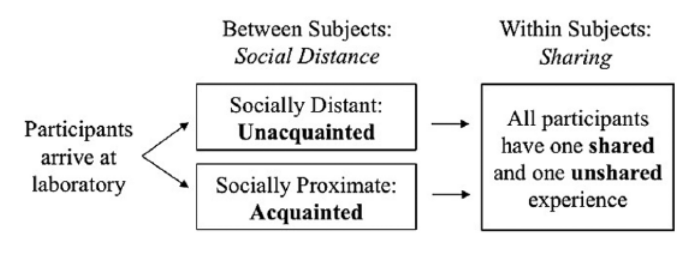
\(N=44\) participants were all women 19-25 from Harvard who met with a confederate; social proximity created through an ‘ice-breaker’ task; \(N=21\) participants in the control group
task: - taste two chocolates (A & B) once while confederate was also tasting, once while C was viewing a piece of artwork (chocolates were identical)
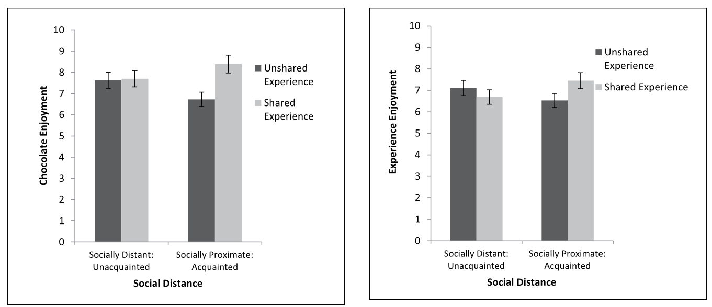
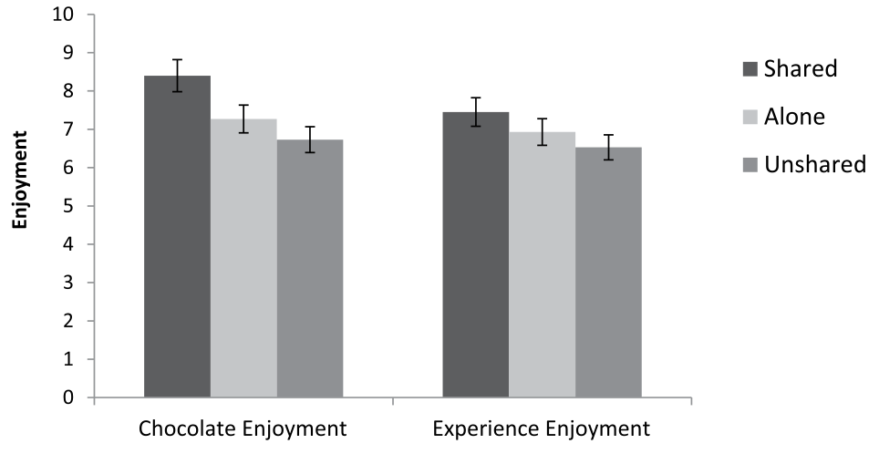
Boothby et al. (2016); Social amplification depends on social proximity; participants’ enjoyment of the chocolate was amplified when shared and de-amplified when unshared with a socially proximate co-experiencer, compared with being alone.
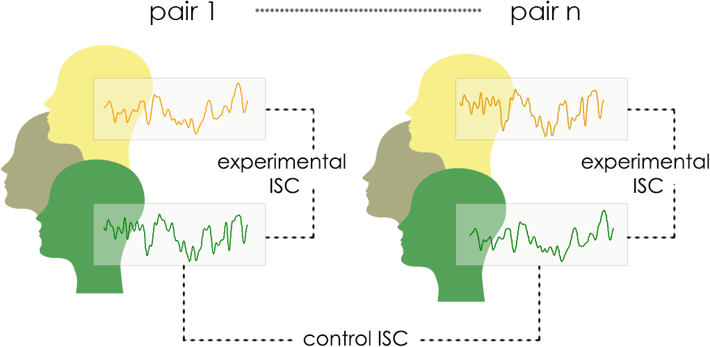
22 triplets of female participants watched two 7-minute movie clips, one negative and one positive, while physiological measures were recorded from 2 of them:
On each time-series, an inter-subject correlation (ISC) was calculated (max correlation of time-series within +/- 10 seconds)
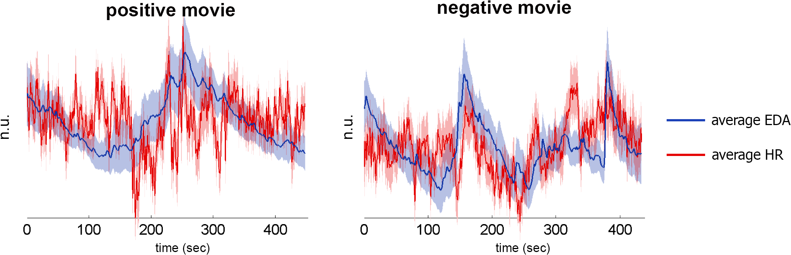
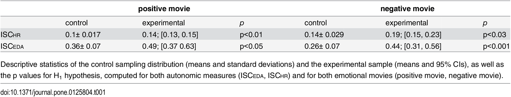
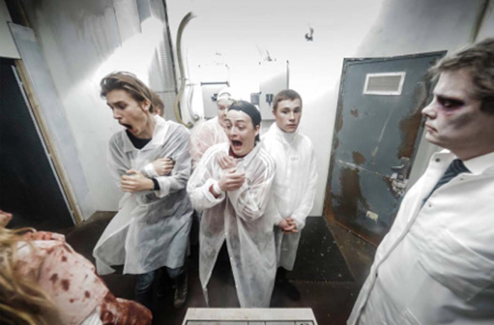
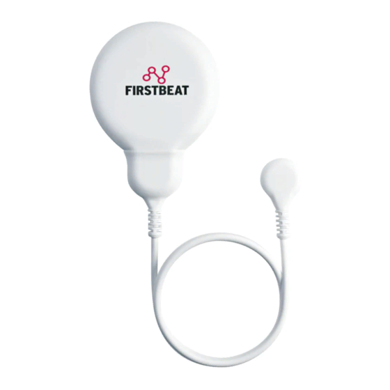
\(N=347\) participants (18-63 years old; forming 87 groups) wore HR monitors going through a 55-minute haunted house in Copenhagen. Each participant identified the group members to whom they felt close
Do people who experience synchrony with others in the group also experience greater emotional arousal?
Is synchrony higher in emotionally close dyads?
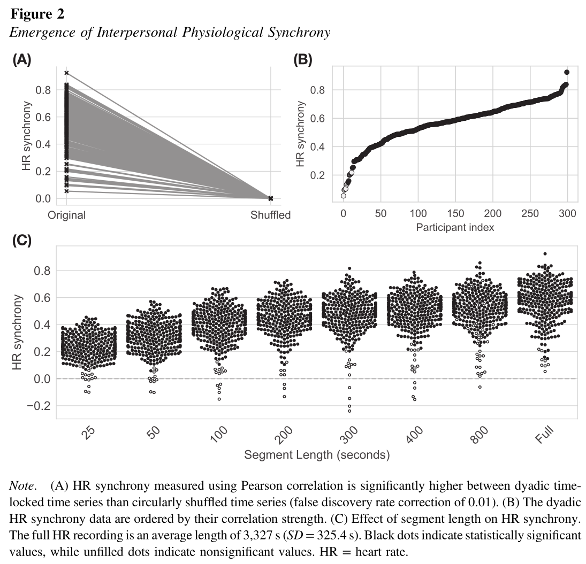
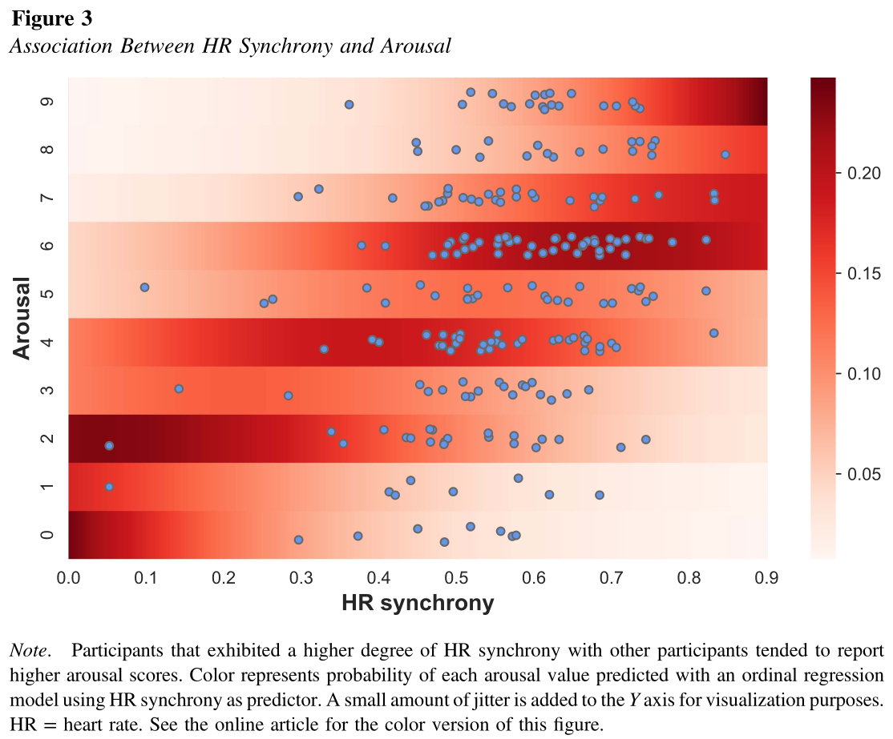
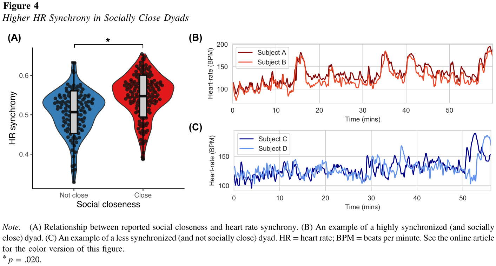
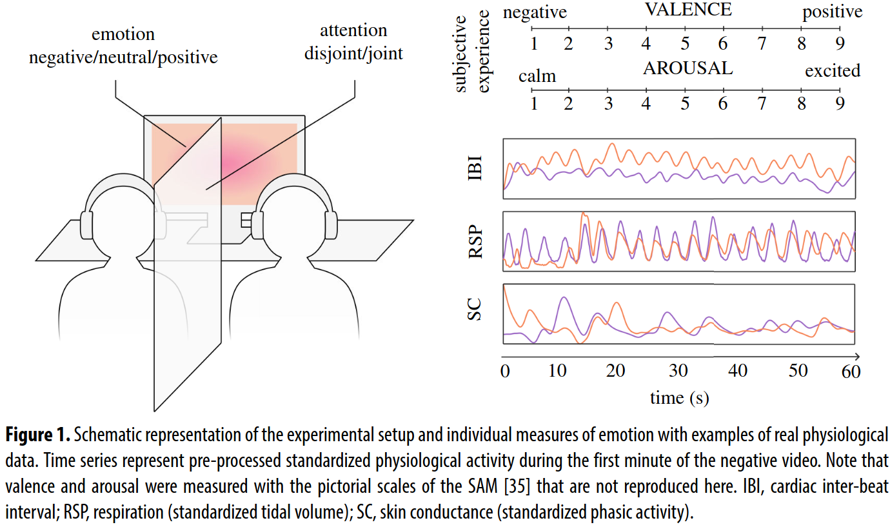
56 unacquainted dyads watched 5-min videos together under two conditions: joint v. disjoint attention
electrophysiological measurements of emotional arousal recorded continuously and used to predict development of feelings of mutual connectedness
social facilitation (and inhibition)
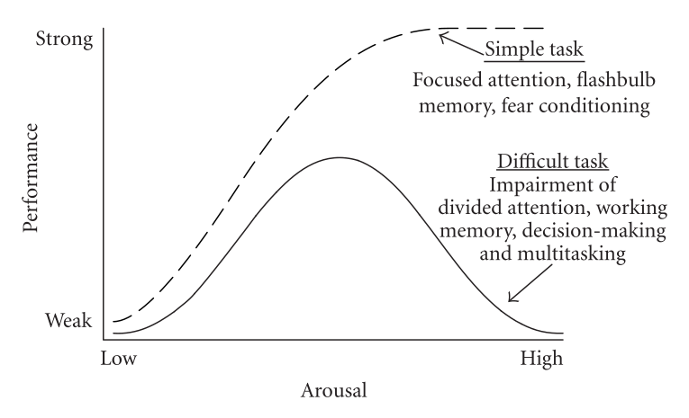
social effects on performance:
performance improves in presence of an audience (Triplett, 1897)
however this social faciliation is only for simple tasks; complex tasks exhibit social inhibition
social presence increases arousal, and the performance function obeys Yerkes-Dodson law (Zajonc, 1965)